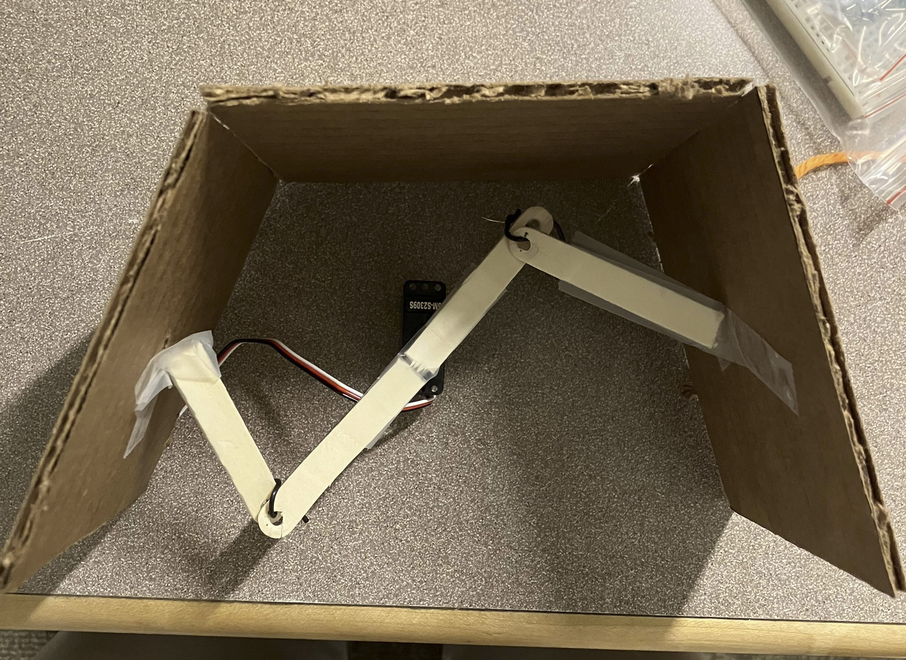

Overview
As a part of the APSC101 course at UBC, myself and 5 others constructed an automatic, sensor based mechanical claw. The claw was designed for a competition, where it needed to excel at picking up a variety of objects, as well as efficiently collect small foam cubes. The claw was designed to be operated using a crane, which was attached to the claw using a string.
How it works
The claw structure is made mostly of sheet metal which we used sheet metal tools to craft, that includes the two side pieces, the roof piece, and the hinges which were bolt-cut onto the claw. The claw is operated by an Arduino mounted atop the roof of the claw. On the underside of the roof, there is a cardboard compartment containing the battery for the Arduino. The opening/closing mechanism is regulated by an Arduino ultrasonic sensor which is taped onto the cardboard compartment, and is execute through a mechanism of two copper wires connected a servo motor to the two sides of the claw.
I handled the mechanical design of the claw itself: the shape, materials, and opening/closing mechanism. The majority of the work I did was in the realm of prototyping - testing various types of opening/closing mechanisms, experimenting with hinges, and trying different claw shapes.

The final design of the opening/closing mechanism which you can see above gave us a big advantage over many other teams, as our design was symmetric and well-balanced, allowed for more accurate and steady control, which was especially important in the variety round of the competition.